Google Trends Analysis_Case Study
들어가기
“Google Trends Analysis - Case Study”는 R에서 Google Trends API를 이용해서 관심 검색어의 traffic과 traffic 추이를 분석하는 방법을 실 사례로 따라가면서 학습할 수 있도로 정리한 학습자료다.
배경
일반 대중들의 관심사와 관심의 트랜드를 설명할 데이터 소스로 검색 포털의 검색 통계를 하나의 대상으로 선정하였다. 그리고 그 가능성을 검증하기 위해서 Google Trends의 통계를 수집하고 표현한 방법을 정리하였고, 그 과정에서의 R 코드를 공유한다.
학습 목표
- Google Trends로부터 관심 키워드의 traffic을 수집하는 방법을 숙지한다.
- 단일 키워드와 두개 이상의 키워드로 traffic을 수집하는 방법
- 지역별 (geographic regions)로 traffic을 수집하는 방법
- 예) 한국, 미국
- 임의의 기간동안의 traffic을 수집하는 방법
- Google Trends에서 제공하는 통계 정보를 이해한다.
- 일자별 검색 관심도
- 단위 기간동안의 지역(region, 광역시도, 주)별 키워드 관심도
- 단위 기간동안의 도시별 키워드 관심도
- 단위 기간동안의 관련 주제(topics)별 키워드 관심도
- 관련 주제 Top Rank
- 인기 급상승 관련 주제 Top Rank
- 단위 기간동안의 관련 검색어(related queries)별 키워드 관심도
- 관련 검색어 Top Rank
- 인기 급상승 관련 검색어 Top Rank
- Google Trends에서 제공하는 통계 정보를 시각화하는 방법을 이해한다.
- traffic의 추이를 표현하는 시계열 플롯
- top traffic을 파악하는 버블(bubble) 플롯
Buzz Trafics Analysis
Naver, Google 등의 검색 포털에서의 검색 traffic은 그 시대의 일반 대중들의 관심사를 대변해준다. 또한 시간의 추이에 따른 traffic의 증감은 단위 기간 안에서의 관심의 트랜드를 보여 주는 주요한 정보다.
Google Trends
Google Trends는 Google 검색 로그로부터 집계된 검색 통계정보를 제공하는 서비스로 일부 기능들은 Open API로 조회가 가능하다.
Figure 1: Google Trends Logo
Google Trends 통계정보의 활용
준비하기
패키지 로드
Google Trends 정보를 수집하는 패키지는 gtrendsR 패키지다. 분석과 관련된 패키지를 로드한다.
> ###############################################################
> ## 필요한 패키지 로드
> ###############################################################
> library(gtrendsR)
> library(dplyr)
> library(magrittr)
> library(ggplot2)사용자 함수의 정의
필요한 패키지를 로드하고, 버블플롯을 그리는 함수를 정의한다. Case Study 후반부에 이 사용자 정의함수로 버블플롯을 그릴 것이므로 미리 생성해 두자.
###############################################################
## 사용자 정의함수 - 버블 플롯을 그리는 함수
###############################################################
bbplot <- function(label, value, textColor = "#333333",
color = RColorBrewer::brewer.pal(8, "Dark2")) {
library(bubbles)
library(RColorBrewer)
color <- substr(color, 1, 7)
n <- length(label)
n.pal <- length(color)
if (n > n.pal) {
color <- c(color, rep(color[n.pal], n - n.pal))
}
if (n < n.pal) {
color <- color[1:n]
}
bubbles(value, label, color = color, textColor = textColor)
}Bitcoin 거래 시세 데이터
Bitcoin 거래 시세는 별도로 수집해서 CSV 파일에 담아 놓았다. 시세를 담은 CSV 파일인 <a href=“../data/market-price.csv”, target = "_blank">market-price.csv을 로드한다.
> ###############################################################
> ## Bitcoin 거래 시세 정보
> ###############################################################
> dpath <- "data"
> bitprice <- read.csv(paste(dpath, "market-price.csv", sep = "/"), header = FALSE)
>
> bitprice <- bitprice %>%
+ transmute(date = as.POSIXct(V1),
+ value = V2)Google Trends 데이터 수집하기
Google Trends 데이터를 수집하기 위해서는 인터넷에 접속된 온라인 환경이어야만 가능하다. 그러므로 이 절의 예제는 온라인에 접속된 인터넷 환경에서만 사용하기 바란다.
두 개의 키워드로 traffic 데이터 수집
다음처럼 gtrends()로 “YOLO”와 “DINK”의 두 검색 키워드로 traffic을 조회한다. 이 경우는 world 기준의 traffic이다. 즉, 전세계 사람들이 Google에서 검색한 통계를 수집하게 된다.
> yolo_trend <- gtrends(c("YOLO", "DINK"))traffic trend plot
수집한 traffic 데이터는 다음처럼 plot() 함수로 간단하게 시계열 그래프를 그릴 수 있다.
> plot(yolo_trend)
시계열 그래프를 보면 y-축인 Search hits의 최대값이 100임을 알수 있다. 즉, traffic 데이터는 검색 건수가 아니라 통계 시점에서 가장 큰 규모의 traffic을 100으로 놓고 산정한 상대적인 측도이다.
traffic 데이터의 시계열 그래프는 ggplot2 패키지로 생성한다. 그래서 다음의 ggplot2 패키지의 기능을 추가하여 좀 더 팬시하게 그래프를 그릴 수도 있다. 두번 째 플롯이 범례를 아래로 이동해서 가독성을 높인 것이다.
> p <- plot(yolo_trend) > p +
+ ggtitle("Google Trend Traffics (Interest over Time)") +
+ theme(plot.title = element_text(hjust = 0.5)) +
+ theme(legend.position = "bottom")
대한민국 traffic 데이터 수집
geo 인수값을 “KR”로 지정하면 우리 나라에서 검색한 traffic 통계를 수집한다.
> yolo_trend2 <- gtrends(c("YOLO", "DINK"), geo = "KR")YOLO 검색 traffic은 전세계적으로 줄어드는 추세이지만, 우리나라에서는 2016년도 말부터 증가하다가 2017년도 하반기부터 줄어드틑 추세임을 알 수 있다.
> p <- plot(yolo_trend2) > p +
+ ggtitle("Google Trend Traffics (Interest over Time)") +
+ theme(plot.title = element_text(hjust = 0.5)) +
+ theme(legend.position = "bottom")
한글 키워드 traffic 데이터 수집
한글 키워드로 비트코인이라는 검색어의 traffic을 수집한다.
> bit_trend <- gtrends(c("비트코인"), geo = "KR")2013년도 하반기 반짝 상승 이후로 traffic이 없다가 2017년 초부터 급증함을 알 수 있다.
> p <- plot(bit_trend) > p +
+ ggtitle("Google Trend Traffics (Interest over Time)") +
+ theme(plot.title = element_text(hjust = 0.5)) +
+ theme(legend.position = "bottom")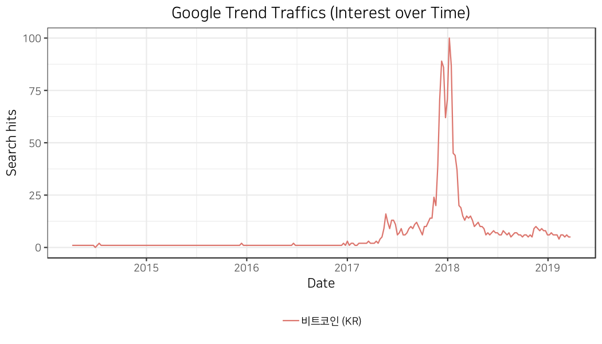
두 나라의 traffic 데이터 수집
비트코인 검색어의 traffic을 미국과 우리 나라를 비교하기 위해서, 영문으로 검색한다.
> bit_trend2 <- gtrends(c("bitcoin"), geo = c("KR", "US"))두 나라의 traffic이 유사하지만 2017년도 말의 급등세는 미국에서의 규모가 더 크다.
> p <- plot(bit_trend2) > p +
+ ggtitle("Google Trend Traffics (Interest over Time)") +
+ theme(plot.title = element_text(hjust = 0.5)) +
+ theme(legend.position = "bottom")
참고로 앞에서 수집한 CSV의 비트코인 시세 데이터인 bitprice 데이터 프레임객체를 시계열 플롯으로 출력해보자.
> head(bitprice)
date value
1 2009-01-03 0
2 2009-01-05 0
3 2009-01-07 0
4 2009-01-09 0
5 2009-01-11 0
6 2009-01-13 0
> bitprice %>%
+ ggplot(aes_string(x = "date", y = "value")) +
+ geom_line() +
+ xlab("Date") +
+ ylab("Price ($)") +
+ ggtitle("Bitcoin Price Trend") +
+ theme_bw() +
+ theme(plot.title = element_text(hjust = 0.5)) +
+ theme(legend.title = element_blank()) 
비트코인 매매 시세가 정확히 traffic 데이터와 유사한 패턴을 보여줌을 알 수 있다.
특정 기간의 traffic 데이터 수집
임의의 기간동안의 검색 traffic을 수집하기 위해서는 time 인수에 다음 예제와 같은 포맷으로 시작 일자와 종료 일자를 지정할 수 있다.
2013, 2014, 2015, 2016, 2017년의 각각의 5년치 traffic을 수집한다.
> bit_trend_2013 <- gtrends(c("bitcoin"), geo = c("KR", "US"),
+ time = "2013-01-01 2013-12-31")
>
> bit_trend_2014 <- gtrends(c("bitcoin"), geo = c("KR", "US"),
+ time = "2014-01-01 2014-12-31")
>
> bit_trend_2015 <- gtrends(c("bitcoin"), geo = c("KR", "US"),
+ time = "2015-01-01 2015-12-31")
>
> bit_trend_2016 <- gtrends(c("bitcoin"), geo = c("KR", "US"),
+ time = "2016-01-01 2016-12-31")
>
> bit_trend_2017 <- gtrends(c("bitcoin"), geo = c("KR", "US"),
+ time = "2017-01-01 2017-12-31")
>
> bit_trend_2013_k <- gtrends(c("비트코인"), geo = c("KR"),
+ time = "2013-01-01 2013-12-31")
>
> bit_trend_2014_k <- gtrends(c("비트코인"), geo = c("KR"),
+ time = "2014-01-01 2014-12-31")
>
> bit_trend_2015_k <- gtrends(c("비트코인"), geo = c("KR"),
+ time = "2015-01-01 2015-12-31")
>
> bit_trend_2016_k <- gtrends(c("비트코인"), geo = c("KR"),
+ time = "2016-01-01 2016-12-31")
>
> bit_trend_2017_k <- gtrends(c("비트코인"), geo = c("KR"),
+ time = "2017-01-01 2017-12-31")2017년도 말의 급등세가 우리 나라보다 미국이 크다는 것은 4/4분기의 중반 이후부터 두드러짐으로 알 수 있다.
> p <- plot(bit_trend_2017) > p +
+ ggtitle("Google Trend Traffics (Interest over Time)") +
+ theme(plot.title = element_text(hjust = 0.5)) +
+ theme(legend.position = "bottom")
Google Trends 데이터의 구조
gtrends 객체
gtrends 패키지로 수집한 Google Trends 데이터는 gtrends 객체로 저장된다.
> is(bit_trend2)
[1] "gtrends"gtrends 객체는 다음처럼 6개의 속성 데이터를 가지고 있다.
> names(bit_trend2)
[1] "interest_over_time" "interest_by_country" "interest_by_region"
[4] "interest_by_dma" "interest_by_city" "related_topics"
[7] "related_queries" interest_over_time
interest_over_time는 일자별로 traffic 정보를 담고 있는 데이터 프레임이다. 일자, 상대 traffic, 키워드, 국가, 그룹, 카테고리 정보를 담고 있다.
그룹(gprop)은 web, news, images, froogle, youtube 중에서 한가지 값을 갖는데 기본값으로 수집하면 웹검색 traffic인 web으로 지정된다.
> head(bit_trend2$interest_over_time)
date hits keyword geo time gprop category
1 2015-12-27 1 bitcoin KR today+5-y web 0
2 2016-01-03 1 bitcoin KR today+5-y web 0
3 2016-01-10 1 bitcoin KR today+5-y web 0
4 2016-01-17 1 bitcoin KR today+5-y web 0
5 2016-01-24 1 bitcoin KR today+5-y web 0
6 2016-01-31 2 bitcoin KR today+5-y web 0
> tail(bit_trend2$interest_over_time)
date hits keyword geo time gprop category
517 2020-11-15 18 bitcoin US today+5-y web 0
518 2020-11-22 19 bitcoin US today+5-y web 0
519 2020-11-29 17 bitcoin US today+5-y web 0
520 2020-12-06 13 bitcoin US today+5-y web 0
521 2020-12-13 23 bitcoin US today+5-y web 0
522 2020-12-20 21 bitcoin US today+5-y web 0interest_by_region
interest_by_region은 검색한 사람이 거주하는 지역으로서의 광역시도(우리나라)와 주(States, 미국) 정보를 담고 있다.
> bit_trend2$interest_by_region
location hits keyword geo gprop
1 Seoul 100 bitcoin KR web
2 Daejeon 77 bitcoin KR web
3 Jeju-do 74 bitcoin KR web
4 Gyeonggi-do 66 bitcoin KR web
5 Incheon 54 bitcoin KR web
6 Gyeongsangbuk-do 53 bitcoin KR web
7 Gyeongsangnam-do 49 bitcoin KR web
8 Daegu 46 bitcoin KR web
9 Busan 45 bitcoin KR web
10 Chungcheongnam-do 42 bitcoin KR web
11 Ulsan 40 bitcoin KR web
12 Jeollanam-do 39 bitcoin KR web
13 Jeollabuk-do 37 bitcoin KR web
14 Gwangju 36 bitcoin KR web
15 Chungcheongbuk-do 34 bitcoin KR web
16 Gangwon-do 31 bitcoin KR web
17 Hawaii 100 bitcoin US web
18 Nevada 99 bitcoin US web
19 California 96 bitcoin US web
20 Washington 94 bitcoin US web
21 New York 91 bitcoin US web
22 Utah 83 bitcoin US web
23 New Jersey 83 bitcoin US web
24 Colorado 82 bitcoin US web
25 Florida 78 bitcoin US web
26 Oregon 76 bitcoin US web
27 Alaska 75 bitcoin US web
28 Massachusetts 74 bitcoin US web
29 Illinois 74 bitcoin US web
30 Connecticut 74 bitcoin US web
31 Arizona 72 bitcoin US web
32 Maryland 68 bitcoin US web
33 New Hampshire 67 bitcoin US web
34 Pennsylvania 66 bitcoin US web
35 Virginia 66 bitcoin US web
36 Idaho 65 bitcoin US web
37 Rhode Island 65 bitcoin US web
38 Montana 64 bitcoin US web
39 Minnesota 63 bitcoin US web
40 North Dakota 62 bitcoin US web
41 District of Columbia 62 bitcoin US web
42 Michigan 61 bitcoin US web
43 Texas 61 bitcoin US web
44 Vermont 61 bitcoin US web
45 Georgia 58 bitcoin US web
46 Delaware 58 bitcoin US web
47 Wisconsin 57 bitcoin US web
48 Nebraska 55 bitcoin US web
49 Maine 55 bitcoin US web
50 Missouri 55 bitcoin US web
51 North Carolina 54 bitcoin US web
52 Kansas 54 bitcoin US web
53 Iowa 53 bitcoin US web
54 Ohio 53 bitcoin US web
55 New Mexico 52 bitcoin US web
56 Wyoming 51 bitcoin US web
57 Tennessee 49 bitcoin US web
58 Indiana 49 bitcoin US web
59 South Dakota 48 bitcoin US web
60 Louisiana 48 bitcoin US web
61 South Carolina 47 bitcoin US web
62 Oklahoma 46 bitcoin US web
63 Alabama 45 bitcoin US web
64 Kentucky 45 bitcoin US web
65 Arkansas 45 bitcoin US web
66 West Virginia 40 bitcoin US web
67 Mississippi 39 bitcoin US webinterest_by_dma
interest_by_dma는 DMA(Designated Market Area) 정보를 담고 있다. DMA는 시장분석 전문회사인 Nielsen이 시장 분석을 위해서 지정한 지역 분류체계로 우리나라는 없고, 미국에서만 정의되어 있다.
> dim(bit_trend2$interest_by_dma)
[1] 210 5
> head(bit_trend2$interest_by_dma)
location hits keyword geo gprop
1 San Francisco-Oakland-San Jose CA 100 bitcoin US web
2 Seattle-Tacoma WA 86 bitcoin US web
3 Las Vegas NV 86 bitcoin US web
4 Honolulu HI 83 bitcoin US web
5 West Palm Beach-Ft. Pierce FL 81 bitcoin US web
6 Los Angeles CA 79 bitcoin US web
> tail(bit_trend2$interest_by_dma)
location hits keyword geo gprop
205 Hattiesburg-Laurel MS 27 bitcoin US web
206 Albany GA 27 bitcoin US web
207 Harlingen-Weslaco-Brownsville-McAllen TX 26 bitcoin US web
208 Greenwood-Greenville MS 26 bitcoin US web
209 Meridian MS 26 bitcoin US web
210 Laredo TX 22 bitcoin US webinterest_by_city
interest_by_city는 검색한 사람이 거주하는 지역으로서의 도시 정보를 담고 있다.
> dim(bit_trend2$interest_by_city)
[1] 90 5
> head(bit_trend2$interest_by_city)
location hits keyword geo gprop
1 Seongnam-si 100 bitcoin KR web
2 Seoul 73 bitcoin KR web
3 Pyeongtaek-si 70 bitcoin KR web
4 Hwaseong-si 65 bitcoin KR web
5 Yongin-si 60 bitcoin KR web
6 Daejeon 58 bitcoin KR web
> tail(bit_trend2$interest_by_city)
location hits keyword geo gprop
85 Dallas 41 bitcoin US web
86 Indianapolis NA bitcoin US web
87 Oklahoma City NA bitcoin US web
88 Louisville NA bitcoin US web
89 San Antonio 35 bitcoin US web
90 Memphis NA bitcoin US webGoogle Trends traffic 시각화
시계열 그래프
일자별 시계열 그래프는 이미 앞에서 다루었으므로 생략한다.
Top Rank 시각화
앞서 만들어 놓은 bbplot() 함수를 이용해서 시각화한다.
관련 주제별 traffic 현황
관련 주제가 영문으로 출력되지만, 비트코인 검색어의 관련 주제 규모를 버블차트로 출력해 보자.
> ##===========================================================
> ## 관련 Topic별 Traffics
> ##===========================================================
> bit_trend$related_topics %>%
+ filter(related_topics == "top") %>%
+ mutate(relative = as.integer(subject) + 1) %>%
+ mutate(label = gsub(" ", "", value)) %>%
+ filter(relative > 0) %>%
+ select(label, relative) %$%
+ bbplot(label, relative) 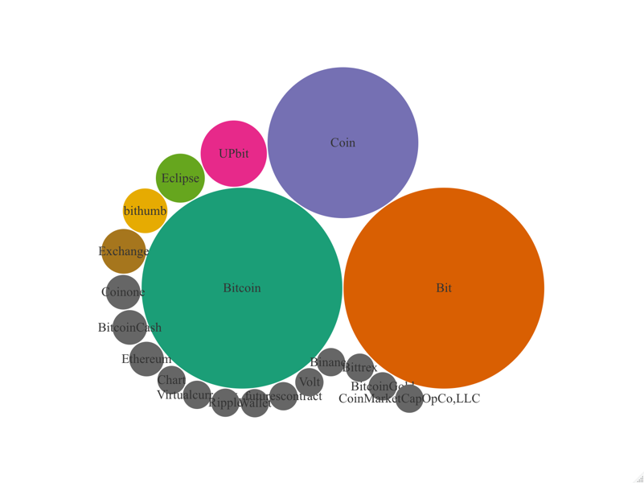
color 인수를 사용하면 버블의 색상을 바꿀 수도 있다.
> bit_trend$related_topics %>%
+ filter(related_topics == "top") %>%
+ mutate(relative = as.integer(subject) + 1) %>%
+ mutate(label = gsub(" ", "", value)) %>%
+ filter(relative > 0) %>%
+ select(label, relative) %$%
+ bbplot(label, relative, color = terrain.colors(35, alpha = NULL))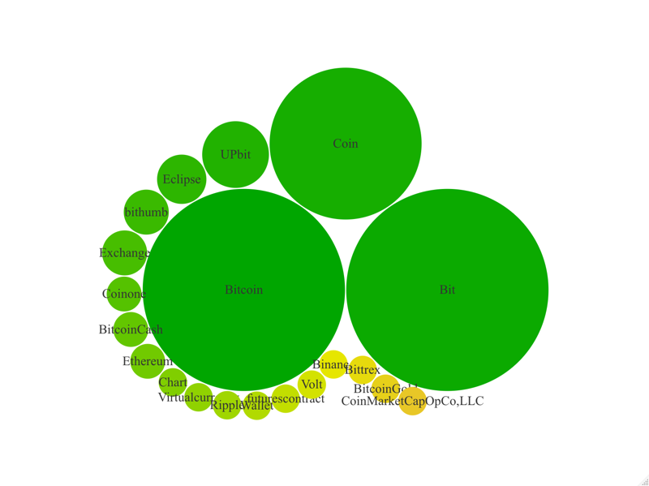
> bit_trend$related_topics %>%
+ filter(related_topics == "top") %>%
+ mutate(relative = as.integer(subject) + 1) %>%
+ mutate(label = gsub(" ", "", value)) %>%
+ filter(relative > 0) %>%
+ select(label, relative) %$%
+ bbplot(label, relative, color = rainbow(20, alpha = NULL))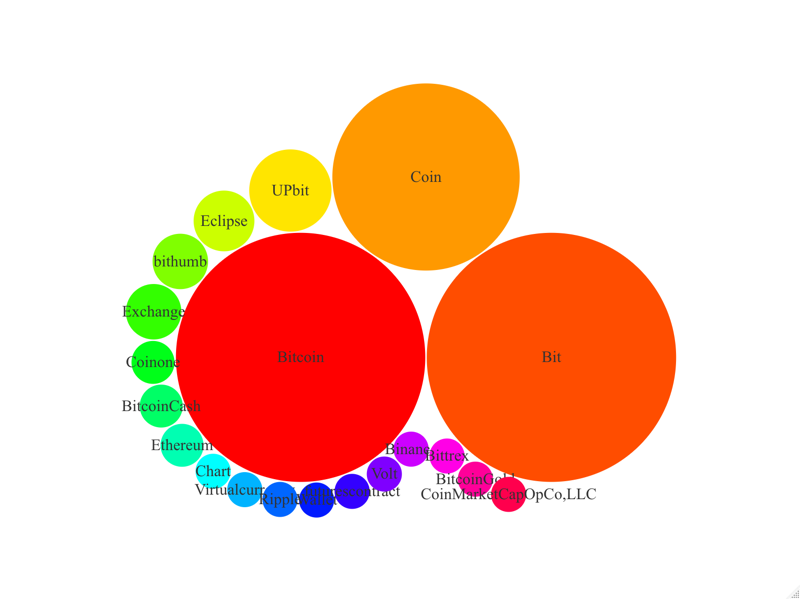
관련 검색어별 traffic 현황
> ##===========================================================
> ## 관련 검색어별 Traffics
> ##===========================================================
> bit_trend$related_queries %>%
+ filter(related_queries == "top") %>%
+ mutate(relative = as.integer(subject) + 1) %>%
+ mutate(label = gsub(" ", "", value)) %>%
+ filter(relative > 0) %>%
+ select(label, relative) %$%
+ bbplot(label, relative)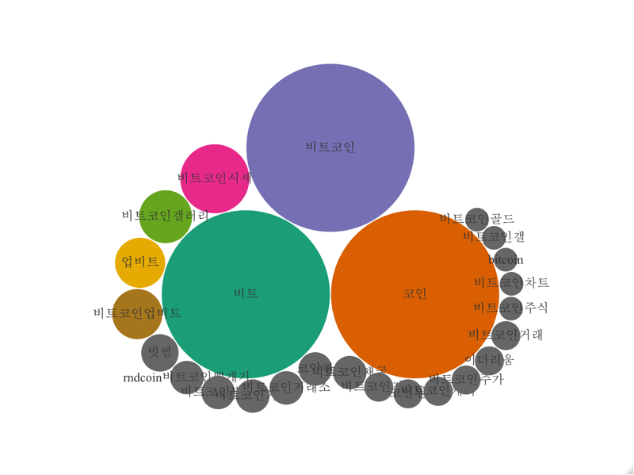
관련 검색어별 통계를 보면 상대 traffic이 0인 건도 통계로 집계되어 있다. 그래서 시각화 함수에서 traffic이 0인 건의 포함여부를 지정할 수 있도록 gplot.queries() 함수를 만들어 보았다.
> gplot.queries <- function(x, rm.zero = FALSE, geos = "KR",
+ color = RColorBrewer::brewer.pal(8, "Dark2")) {
+ x$related_queries %>%
+ filter(geo %in% geos) %>%
+ filter(related_queries == "top") %>%
+ mutate(relative = as.integer(subject) + !rm.zero) %>%
+ mutate(label = gsub(" ", "", value)) %>%
+ filter(relative > 0) %>%
+ select(label, relative, geo) %$%
+ bbplot(label, relative, color = color)
+ }다음 예제는 traffic이 0인 건을 제거한 후 버블차트를 그리는 예제다.
> gplot.queries(bit_trend, rm.zero = TRUE)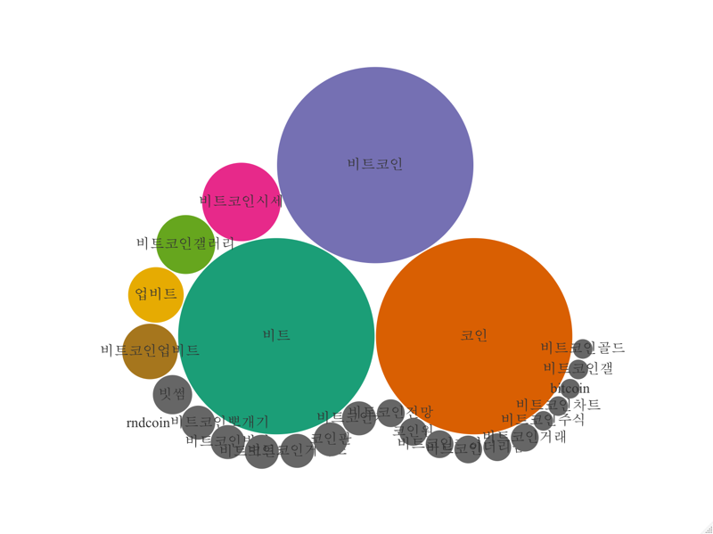
2013년부터 2017년까지의 관련 검색어 Top 랭크를 살펴보자.
2013년도
> gplot.queries(bit_trend_2013_k, rm.zero = TRUE,
+ color = terrain.colors(20, alpha = NULL))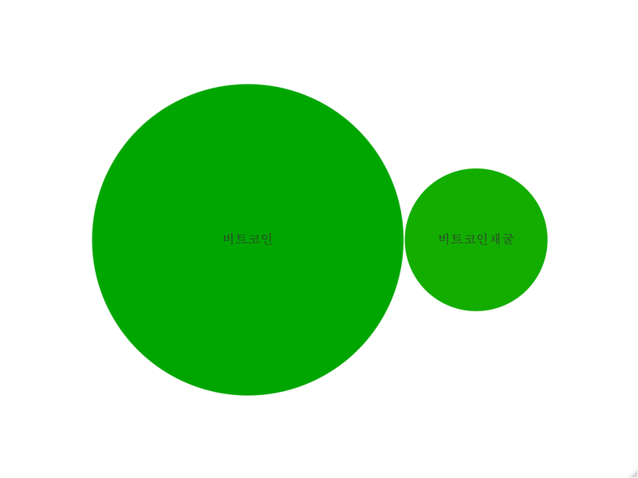
2014년도
> gplot.queries(bit_trend_2014_k, rm.zero = TRUE,
+ color = terrain.colors(20, alpha = NULL))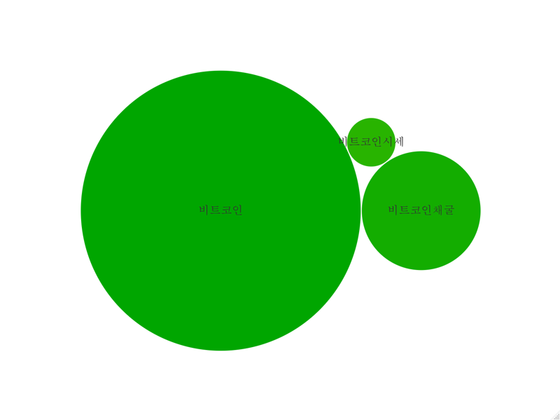
2015년도
> if (!is.null(bit_trend_2015_k$related_queries)) {
+ gplot.queries(bit_trend_2015_k, rm.zero = TRUE,
+ color = terrain.colors(20, alpha = NULL))
+ }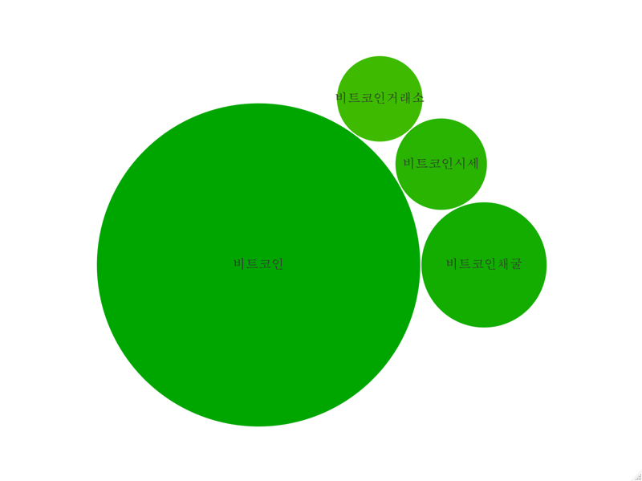
2016년도
> gplot.queries(bit_trend_2016_k, rm.zero = TRUE,
+ color = terrain.colors(20, alpha = NULL))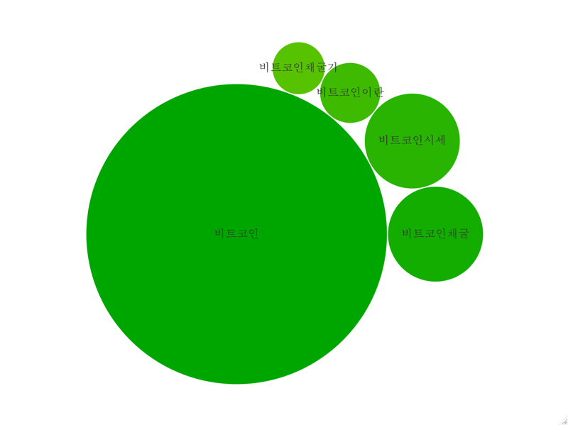
2017년도
> gplot.queries(bit_trend_2017_k, rm.zero = TRUE,
+ color = terrain.colors(20, alpha = NULL))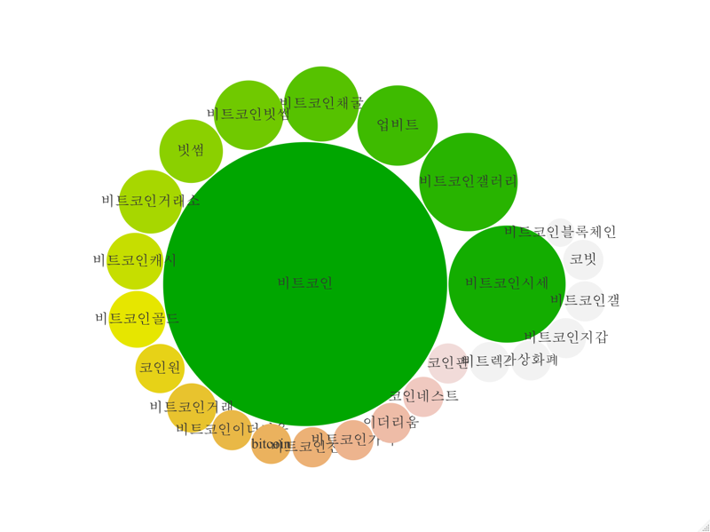
광역시도별 traffic 현황
광역시도별 traffic 현황을 그리기 위해서 다음의 함수를 만들었다.
> gplot.region <- function(x, geos = "KR",
+ color = RColorBrewer::brewer.pal(8, "Dark2")) {
+ x$interest_by_region %>%
+ filter(geo %in% geos) %>%
+ mutate(region = location) %>%
+ mutate(region = ifelse(region %in% c("Daejeon"), "대전광역시", region)) %>%
+ mutate(region = ifelse(region %in% c("Incheon"), "인천광역시", region)) %>%
+ mutate(region = ifelse(region %in% c("Seoul"), "서울특별시", region)) %>%
+ mutate(region = ifelse(region %in% c("Ulsan"), "울산광역시", region)) %>%
+ mutate(region = ifelse(region %in% c("Gwangju"), "광주광역시", region)) %>%
+ mutate(region = ifelse(region %in% c("Daegu"), "대구광역시", region)) %>%
+ mutate(region = ifelse(region %in% c("Busan"), "부산광역시", region)) %>%
+ mutate(region = ifelse(region %in% c("Chungcheongnam-do"), "충청남도", region)) %>%
+ mutate(region = ifelse(region %in% c("Jeollanam-do"), "전라남도", region)) %>%
+ mutate(region = ifelse(region %in% c("Chungcheongbuk-do"), "충청북도", region)) %>%
+ mutate(region = ifelse(region %in% c("Gyeongsangbuk-do"), "경상북도", region)) %>%
+ mutate(region = ifelse(region %in% c("Jeollabuk-do"), "전라북도", region)) %>%
+ mutate(region = ifelse(region %in% c("Gyeongsangnam-do"), "경상남도", region)) %>%
+ mutate(region = ifelse(region %in% c("Gangwon-do"), "강원도", region)) %>%
+ mutate(region = ifelse(region %in% c("Gyeonggi-do"), "경기도", region)) %>%
+ mutate(region = ifelse(region %in% c("Jeju-do"), "제주도", region)) %>%
+ select(region, hits, geo) %$%
+ bbplot(region, hits, color = color)
+ }광역시도별 traffic 현황은 다음과 같다.
> gplot.region(bit_trend)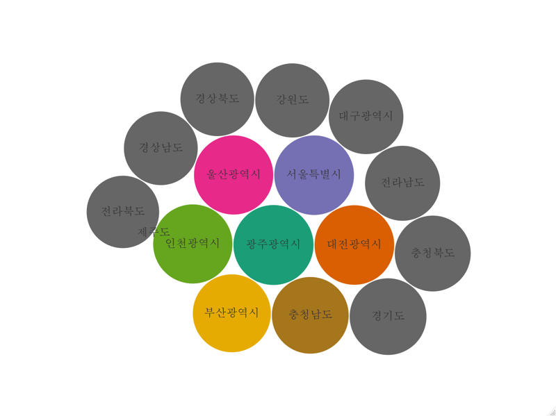
2017년도 광역시도별 traffic 현황은 다음과 같다.
> gplot.region(bit_trend_2017)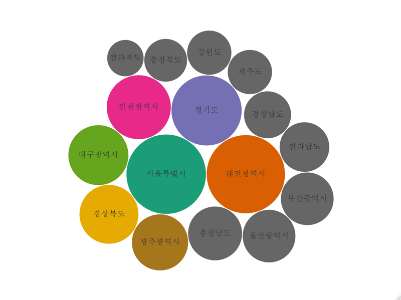
2017년도 미국의 주별 traffic 현황은 다음과 같다.
> gplot.region(bit_trend_2017, geos = "US",
+ color = terrain.colors(60, alpha = NULL))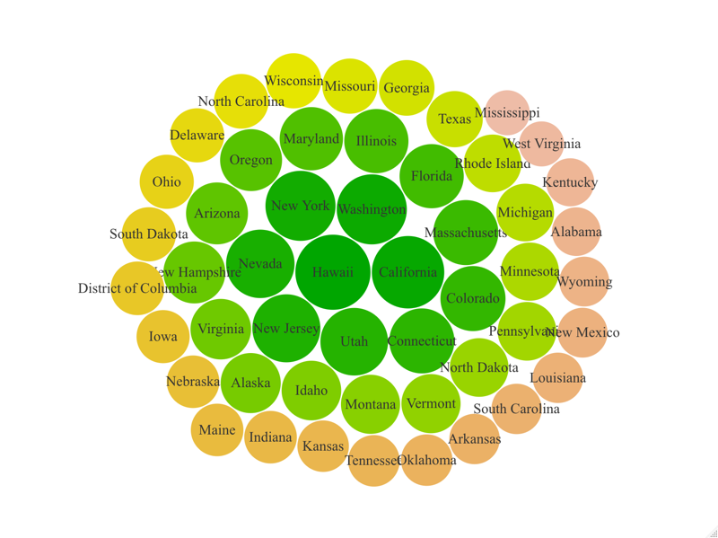